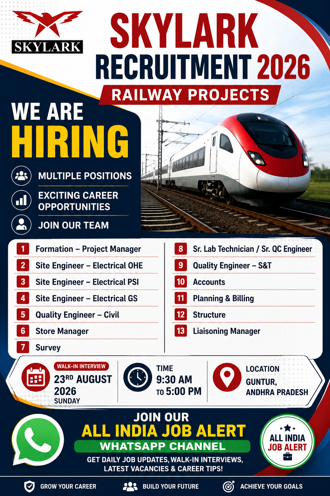

Skylark has announced multiple career opportunities for professionals working in railway construction and infrastructure projects. The recruitment includes several technical, engineering, management, quality, planning, billing, accounts, store, survey and liaisoning positions. These vacancies can be relevant for experienced candidates looking for opportunities in railway project execution and infrastructure development.
According to the supplied recruitment poster, the job location for this recruitment is Guntur, Andhra Pradesh. The available positions cover different departments and levels of responsibility, making this recruitment potentially suitable for candidates with experience in project management, electrical railway systems, civil engineering, quality control, stores, surveying, laboratory work, accounts, planning, billing, structures and project coordination.
Company: Skylark
Recruitment Year: 2026
Project Sector: Railway Projects
Job Location: Guntur, Andhra Pradesh
Recruitment Type: Multiple Positions
Interview Date: 23 August 2026
Interview Time: 9:30 AM to 5:00 PM
The Skylark Recruitment 2026 notification provides opportunities for professionals who want to work on railway infrastructure projects. Railway construction projects generally require professionals from multiple disciplines because civil works, electrical systems, quality control, surveying, planning, billing, stores and project coordination must work together to complete project activities successfully.
This recruitment is therefore relevant to candidates with practical project-site experience as well as professionals who have worked in railway, infrastructure, construction or engineering environments. Candidates should carefully check the position that best matches their qualification and previous work experience before applying.
The Formation Project Manager position is intended for experienced professionals capable of handling major project responsibilities. Candidates applying for managerial positions should have strong knowledge of project execution, planning, coordination, manpower management, progress monitoring and site-level decision making.
The Electrical OHE Site Engineer role is associated with railway electrical infrastructure. Candidates with relevant experience in overhead electrification, railway electrical works, site supervision, installation activities and coordination may find this position suitable.
Candidates experienced in railway electrical PSI-related activities can consider this position. Site engineers are generally expected to coordinate field activities, monitor work progress, follow drawings and specifications and maintain coordination with project teams.
This position is suitable for electrical engineering professionals with relevant railway project experience. Candidates should have a good understanding of site execution and be comfortable working in project-site environments.
The Civil Quality Engineer position is suitable for candidates with experience in construction quality control. Responsibilities may include inspection, quality documentation, checking construction work against approved specifications and coordinating with site teams.
The Store Manager role involves managing project materials and maintaining proper records. Candidates with construction or infrastructure project store-management experience can consider this position.
Survey professionals can apply for opportunities related to railway project surveying. Practical knowledge of site measurements, alignment, levels and survey coordination can be useful for this type of position.
Candidates with experience in laboratory testing and construction quality control may be suitable for this role. Experience with construction materials, testing procedures, quality records and site coordination can be valuable.
The Quality Engineer – S&T position is intended for candidates with relevant quality experience in railway signalling and telecommunication-related project environments.
Accounts professionals with project or construction-industry experience may consider this vacancy. Candidates should be comfortable with project-related financial documentation and coordination.
Planning and Billing professionals play an important role in monitoring project progress, preparing reports, tracking quantities and supporting project commercial activities. Candidates with construction or infrastructure experience can apply.
Structural professionals with relevant railway or infrastructure project experience may be considered for structural project activities, coordination and site execution.
The Liaisoning Manager position requires strong coordination and communication skills. Candidates experienced in project-level liaisoning, permissions, coordination and stakeholder communication may find this opportunity relevant.
Get daily job vacancies, railway jobs, construction jobs, walk-in interviews, government job updates and private company recruitment notifications directly on WhatsApp.
👉 Join WhatsApp ChannelThe recruitment includes positions at different professional levels. Candidates should compare their educational qualifications, technical skills and previous project experience with the requirements of the specific position they want to apply for.
Professionals with railway construction experience may have an advantage for railway-specific roles. However, candidates from construction, infrastructure, EPC and related engineering sectors may also consider suitable positions depending on their skills and experience.
Candidates applying for engineering and management positions should highlight their project experience clearly in their CV. Details such as project name, location, designation, responsibilities, total experience and technical specialization can make the resume easier to evaluate.
Railway infrastructure projects involve multiple technical disciplines and require careful coordination between engineering, construction, quality and project-management teams. Professionals working in this sector can gain exposure to large-scale infrastructure development and multidisciplinary project execution.
Civil engineers may work on formation, structures and associated construction activities. Electrical professionals may work on railway electrification systems. Quality engineers support inspection and quality procedures, while planning and billing teams monitor project progress and commercial requirements.
Because railway projects are generally schedule-driven, professionals should be comfortable working according to project timelines, technical specifications, safety procedures and site requirements.
Eligible candidates can attend the walk-in interview on 23 August 2026. The interview timing mentioned in the provided information is 9:30 AM to 5:00 PM. Candidates should reach the interview location on time and carry an updated resume and relevant documents.
📅 Date: 23 August 2026
⏰ Time: 9:30 AM to 5:00 PM
📍 Location: Guntur, Andhra Pradesh
Interested candidates can share their updated resume with the recruitment team using the email address given below.
Email:
hr3@skylarkworld.com
Candidates should mention the position they are applying for and attach their updated resume. It is recommended to clearly mention relevant railway, construction, infrastructure or engineering experience in the CV.
Applicants should prepare a clear and updated resume before attending the interview or sending an application. The resume should include current contact information, educational qualification, total work experience, previous employers, project details, current designation and relevant technical skills.
For engineering positions, candidates should clearly mention their discipline and project experience. Electrical candidates can highlight railway electrification, OHE, PSI or related experience where applicable. Civil professionals can mention construction, quality, structures and infrastructure experience. Planning and billing professionals should highlight project planning, quantity tracking, billing and reporting experience.
Candidates attending a walk-in interview should try to reach the venue before the scheduled reporting time. Carry multiple copies of the updated resume and keep original documents available for verification if requested.
Candidates should dress professionally and be prepared to explain their previous project responsibilities. Interviewers may ask about technical knowledge, site experience, project coordination, quality procedures, safety awareness and previous responsibilities.
Applicants should also verify the exact interview location and recruitment details before travelling, particularly if the information is received through social media or third-party job channels.
Join our All India Job Alert WhatsApp Channel for new railway, construction, engineering and walk-in interview updates.
Join WhatsApp ChannelThis job information has been prepared from the recruitment poster and details supplied for this vacancy. Candidates should independently verify the latest vacancy status, interview arrangements, employment terms, salary, selection process and other conditions with the recruiting organization before travelling or accepting an offer.
Job seekers should never pay money to unknown individuals for registration, interview scheduling, selection, offer letters or recruitment processing without proper verification. Be careful of fraudulent recruitment messages and always verify suspicious requests.
This recruitment can be considered by professionals interested in railway infrastructure and construction projects. Civil engineers, electrical engineers, quality professionals, survey professionals, planning and billing specialists, store professionals, accounts professionals and experienced project managers may find relevant positions among the listed vacancies.
Candidates should apply only for positions that match their actual skills and experience. Providing incorrect information in a resume can create problems during technical interviews and document verification. It is always better to present genuine project experience and clearly describe previous responsibilities.
Railway infrastructure continues to require professionals from a wide range of engineering and project disciplines. Large projects require proper planning, construction supervision, quality control, electrical systems, surveying, commercial management, stores and stakeholder coordination.
Professionals who build experience in railway projects can develop strong exposure to multidisciplinary project environments. Such experience may help them progress into senior engineering, supervisory, planning, quality or project-management responsibilities over time.
For more private jobs, railway vacancies, construction jobs and walk-in interviews, follow our WhatsApp channel.
📢 All India Job AlertThe Skylark Recruitment 2026 opportunity includes multiple positions connected with railway projects in Guntur, Andhra Pradesh. Candidates with suitable technical qualifications and relevant proj